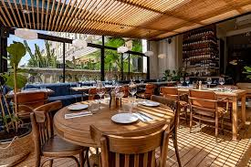
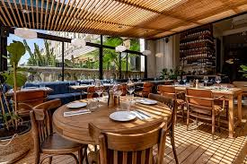

OUR BRANCHES
Welcome to our restaurant — where tradition meets taste, and every meal tells a story.
Established in 1996, our journey began with a single humble branch in the heart of DHA, Lahore. Guided by the vision and passion of our founder, Mr. Umer, we set out with one simple goal: to serve exceptional food made with love, authenticity, and the finest ingredients.
Our Founder – Mr. Umer
Mr. Umer believed that great food brings people together. With a deep respect for traditional recipes and a passion for hospitality, he turned his dream into reality. His commitment to quality, consistency, and community quickly made our restaurant a beloved gathering place for families, friends, and food lovers across Lahore.
Our Promise
More than a 25 Years later, we remain true to our roots. Our chefs continue to use time-honored methods, while adding just the right touch of modern creativity. Whether you’re here for a quick bite or a full dining experience, you’ll always be served with warmth, care, and a dedication to excellence.
Why Choose Us?
- Over 25 Years of Culinary Heritage
- Fresh, Handpicked Ingredients
- Authentic Recipes Passed Through Generations
- A Welcoming Atmosphere That Feels Like Home